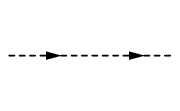
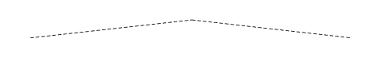

scalar
[1]:
from pyfeyn2.render.all import AllRender
ar = AllRender().demo_propagator("scalar")
Pyx:
Tikz:

Feynmp:

Dot:

ASCIIPDF:
---------------------------------------------------------------------------
KeyError Traceback (most recent call last)
Cell In[1], line 2
1 from pyfeyn2.render.all import AllRender
----> 2 ar = AllRender().demo_propagator("scalar")
File ~/data/de.neuwirthinformatik.Alexander/Development/git/pyfeyn2/pyfeyn2/render/render.py:56, in Render.demo_propagator(self, d, show)
54 fd.legs.extend([l1, l2])
55 self.set_feynman_diagram(fd)
---> 56 self.render(show=show)
File ~/data/de.neuwirthinformatik.Alexander/Development/git/pyfeyn2/pyfeyn2/render/all.py:75, in AllRender.render(self, file, show, subfigure, resolution, width, height)
73 if not subfigure:
74 print("ASCIIPDF:")
---> 75 ASCIIPDFRender(fd).render(dirpath + "/asciipdf.pdf", **dynarg)
76 if not subfigure:
77 print("MPL:")
File ~/data/de.neuwirthinformatik.Alexander/Development/git/pyfeyn2/pyfeyn2/render/asciipdf.py:34, in ASCIIPDFRender.render(self, file, show, resolution, width, height, clean_up)
25 def render(
26 self,
27 file=None,
(...)
32 clean_up=True,
33 ):
---> 34 str = ASCIIRender.render(self, None, False, resolution, width, height)
35 # str = str.replace("^", "\\^{}")
36 # str = str.replace(">", "$>$")
37 # str = str.replace("<", "$<$")
38 self.set_src_diag("\\begin{lstlisting}" + str + "\\end{lstlisting}")
File ~/data/de.neuwirthinformatik.Alexander/Development/git/pyfeyn2/pyfeyn2/render/ascii.py:187, in ASCIIRender.render(self, file, show, resolution, width, height)
185 tar = self.fd.get_vertex(l.target)
186 if l.sense[:2] == "in" or l.sense[:8] == "anti-out":
--> 187 namedlines[l.type]().draw(pane, Point(l.x, l.y), tar, **fmt)
188 elif l.sense[:3] == "out" or l.sense[:9] == "anti-in":
189 namedlines[l.type]().draw(pane, tar, Point(l.x, l.y), **fmt)
KeyError: 'scalar'
[ ]: